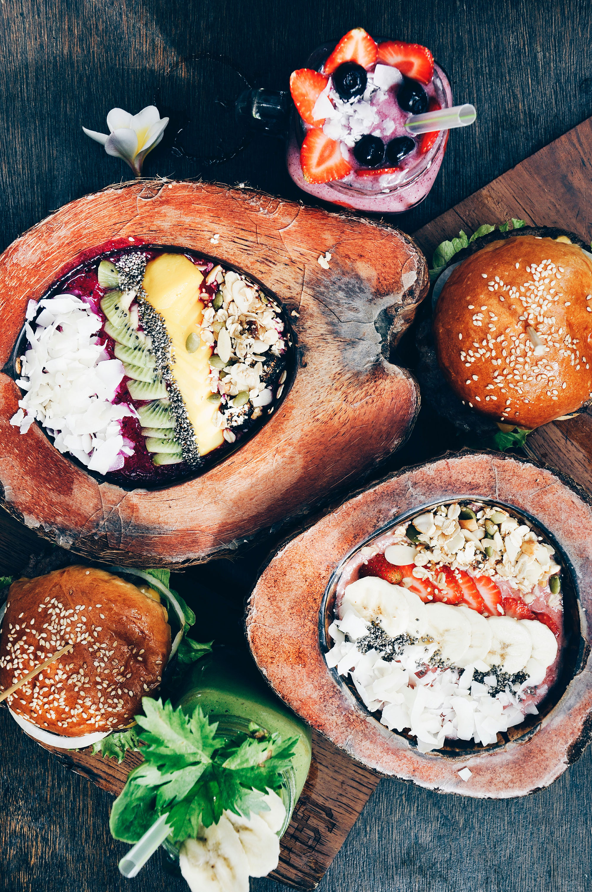

Quite simply, a diet rich in vegetables, legumes, whole grains, fruits, nuts and seeds is amazing for your health and vitality. Together, these foods have plenty of carbohydrates for energy, fibre for digestion and gut micro biome, healthy unsaturated fats, complete plant protein, as well as heaps of vitamins and minerals, including crucial nutrients such as vitamin C, folate, zinc and magnesium.
In 2019, a new Canadian food guide was released and it is an excellent example of how governments can promote a more plant-based lifestyle. The visual guide shows a plate, where animal products and sugar have been reduced; the meat and dairy food groups have been removed; plant and animal protein sources are grouped into ‘protein foods’; and fruit and vegetables together take up half of the plate. The new guide advises ‘among protein foods, consume plant-based more often’.
When embarking on any diet, you must educate yourself in order to make it work for you. If you cannot make it work 100 per cent of the time that’s okay, because I strongly believe in the philosophy of progress over perfection, and any improvement, small or large, is a step in the right direction!
The livestock industry is one of the biggest contributors to environmental damage today. This includes pollution, water use, land use, species extinction, antibiotic resistance and fish species depletion. Raising animals for meat and dairy products requires enormous amounts of land to grow their feed, which in turn requires irrigation/water use. To produce 1 kg of beef, up to 13 kg of grain and 15,000 litres of water is used. This is a huge amount of grain that we could be using to feed the world, and land we could use to farm other food sources. Livestock also contributes to climate change due to the methane gas produced by cows and other grazing animals.
 Back to Course Home Page